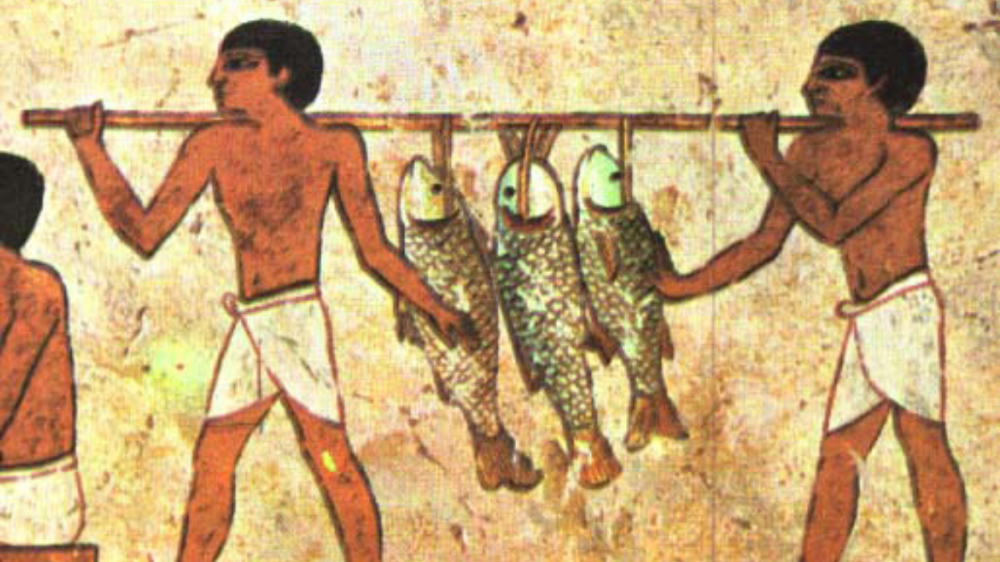

Conheça a economia do egito:
A economia do Egito é uma das mais importantes do Norte da África e do mundo árabe. Misturando setores tradicionais, como agricultura e turismo, com áreas modernas, como energia e tecnologia, o país possui uma economia diversificada que continua em crescimento, apesar de desafios sociais e estruturais.
Características Gerais da Economia
O Egito tem uma das maiores populações da África, o que cria um grande mercado consumidor interno. A economia é classificada como mista, combinando iniciativa privada com forte participação do governo em setores estratégicos. O país é um ponto de ligação entre África, Oriente Médio e Europa, favorecendo o comércio internacional.
Canal de Suez
Um dos pilares da economia egípcia é o Canal de Suez, uma das rotas marítimas mais importantes do planeta.
- Liga o Mar Mediterrâneo ao Mar Vermelho.
- Permite que navios naveguem entre Europa e Ásia sem contornar a África.
- Gera bilhões de dólares por ano em taxas de tráfego.
- É controlado pelo governo egípcio e é fonte fundamental de receita nacional.
Agricultura
A agricultura é um dos setores mais antigos e vitais do Egito:
- A região ao redor do Rio Nilo oferece solo fértil graças às suas cheias.
- Principais produtos cultivados: trigo, arroz, milho, algodão, frutas e vegetais.
- O Egito é famoso pelo seu algodão de alta qualidade, reconhecido internacionalmente.
- Apesar da relevância, o setor enfrenta desafios como escassez de água e aumento populacional.